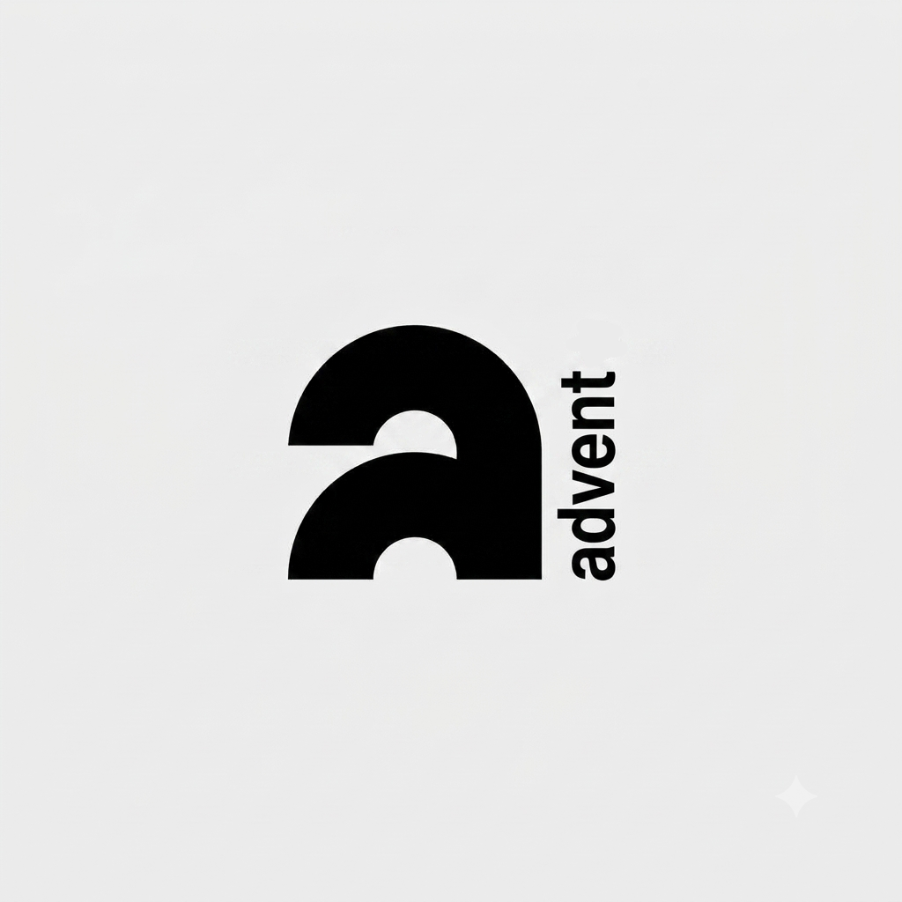

CONSTRUCCIONES
Todo lo necesario para hacer realidad una edificación: desde dibujar los planos hasta dirigir el trabajo en la obra.
↗
Un espacio creado por y para estudiantes, para ayudarte a elegir tu especialidad.
Todo lo necesario para hacer realidad una edificación: desde dibujar los planos hasta dirigir el trabajo en la obra.
↗Aprender cómo están hechas las cosas y cómo combinarlas en un laboratorio para crear nuevos productos.
↗Entender cómo funcionan las computadoras, armar equipos, conectar redes y solucionar fallas.
↗Sabemos que elegir una orientación escolar en 3.° año puede generar muchas dudas e incertidumbre.
Por eso creamos Advent: un espacio diseñado por y para estudiantes, enfocado en acompañarte a descubrir qué especialidad conecta realmente con vos.
Natural Chef
53678298765434 | Hace delivery
Delirios
53678298765434 | Hace delivery
El lugar de enfrente
53678298765434 | No hace delivery
Dulce Catalina
53678298765434 | No hace delivery
Librería Amedotti Piédrola
Teléfono: 3547 570898
Alias: salvamelo
Además de los productos escolares, realiza fotocopias blanco y negro, a color, stickers y otros servicios.
Descripción de la facultad.
Tiene convenios con las siguientes facultades:
VER PÁGINADescripción de la facultad.
Tiene convenios con las siguientes facultades:
VER PÁGINA| Turno | Lunes | Martes | Miércoles | Jueves | Viernes |
|---|---|---|---|---|---|
| Mañana | Víctor Vella | Matías Vivas | Matías Vivas | Matías Vivas | Matías Vivas |
| Tarde | Matías Vivas | Víctor Vella | Víctor Vella | Víctor Vella | Víctor Vella |